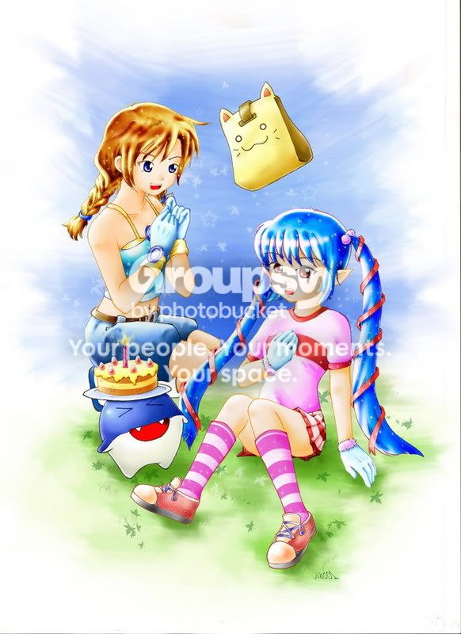

No one เขียน:กลับมาแล้วๆๆๆๆๆๆๆ งั้นเดี๋ยวจะเข้าเกมไปนั่งรอล่ะเน้อ...
ที่ นุ้งหมีเหมือนเดิมเน้ออออออ
http://eco.froztic.in.th/archive/ecofanclub/
http://eco.froztic.in.th/archive/ecofanclub/viewtopic.php?f=16&t=26538
No one เขียน:กลับมาแล้วๆๆๆๆๆๆๆ งั้นเดี๋ยวจะเข้าเกมไปนั่งรอล่ะเน้อ...

cygnus เขียน:รูปสวยนะ ลงสีก็โอเค
แต่ดูแล้วทั้งภาพผมไม่รู้สึกถึงความเป็นอีโค่เลยอ่ะ
นอกจากกระเป๋า กับ ฉากท้องฟ้า
Nimble เขียน:ว่าจะเก็บ l.hit เอา int ด้วยแต่ไม่ไหว +2xx ปั่นกันตายพอดี ปั่นแค่ mag พอละ สงสาร keyboard = ="